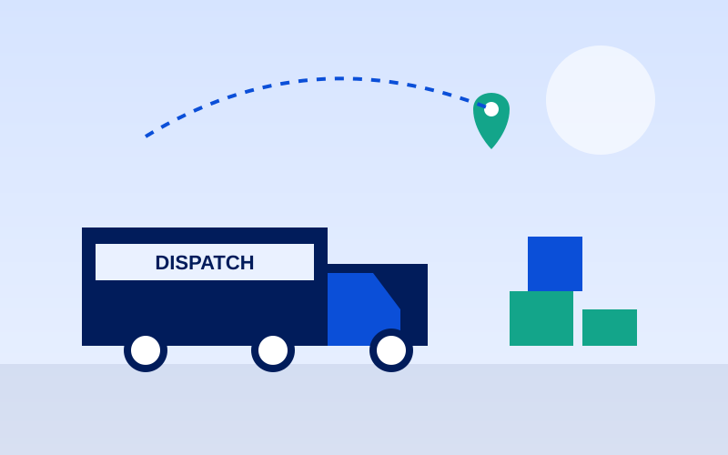

Industries
Same methods, different questions. Here is what each sector tends to ask.

Our experience and our focus. These are the sectors we are building experience in. We are a new practice, so we describe these as target markets, not as a record of past work.
Manufacturing, textile and engineering
Questions we help answer
- Which products and orders earn money?
- Are we delivering on time, and where do delays start?
- How much capacity are we really using?
- How are material costs moving against our selling prices?
What we would typically build
Margin by product and order, a delivery and backlog tracker, and a cost-movement view for key inputs.

Retail and logistics
Questions we help answer
- Which branches, routes or categories perform best?
- How fast does stock turn, and what sits too long?
- Where do returns and delivery delays come from?
What we would typically build
Branch and route scorecards, stock-turn analysis and a returns and delivery tracker.

Healthcare
Questions we help answer
- How well are rooms, equipment and staff time used?
- How long does billing take from service to payment?
- What does each service cost to deliver?
What we would typically build
Utilisation reporting, a billing-cycle view and service-level costing.
Financial and professional services
Questions we help answer
- Which clients and engagements are profitable?
- How much staff time is billable?
- How quickly do we collect what we bill?
What we would typically build
Client profitability analysis, utilisation reporting and a collections tracker.

Startups and growing companies
Questions we help answer
- How long will our cash last under different assumptions?
- Which customers and channels are worth more than they cost?
- What should we show investors each month?
What we would typically build
A cash and scenario model, unit-economics analysis and a concise monthly investor pack.
Larger and international organisations
Questions we expect to help answer
- How can reporting from several units be brought together?
- Where do definitions differ between teams or countries?
Where we are now
We will take on this work once our methods and capacity are ready for it. Until then, we focus on smaller engagements.
Don’t see your sector?
Many questions are the same across industries. Tell us about your business and we’ll say honestly whether we can help.